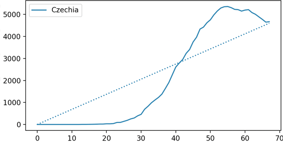
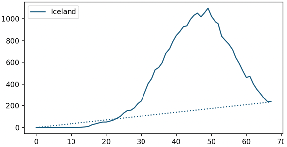
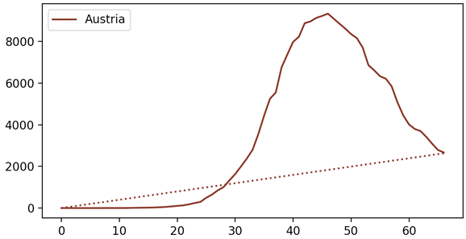
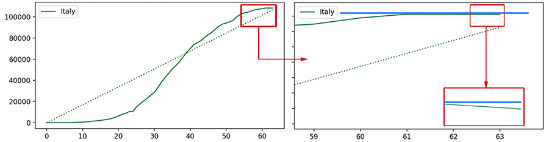
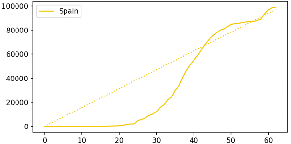
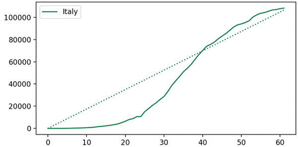
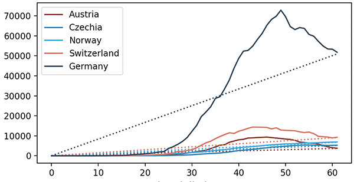

Pandemia koronawirusa
Tylko dobre informacje
Dobre wiadomości z 30 kwietnia
Poprawia się sytuacja w Hiszpanii
Dziś liczba pacjentów, którzy zostali wypisani ze szpitala w ciągu ostatnich godzin, wyniosła 3103, czyli prawie trzy razy więcej niż przypadków nowych zakażeń.
W Wietnamie epidemia jest pod kontrolą
Zawdzięczają to agresywnej polityce testowania.
Tocilizumab to nowy kandydat na lek łagodzący objawy COVID-19
Francuskie badania pokazują, że środek, którym obecnie leczymy artretyzm, potencjalnie pomaga szczególnie w ostrym przypadku choroby.Dobre wiadomości z 29 kwietnia
Wyspy Owcze uporały się z koronawirusem
Ten mały wyspiarski region kompletnie zatrzymał rozprzestrzenianie się zarażeń.
Lek na koronawirusa - nowe informacje od firmy Gilead
Gilead: "Główny cel w badaniach klinicznych potencjalnego leku na COVID-19 został osiągnięty". To dobra informancja. Czekamy na szczegóły.
Chorwacja decyduje się na łagodzenie obostrzeń.
W dniu 27.04.2020 w Chorwacji rozpoczęła się pierwsza faza łagodzenia dotychczasowych obostrzeń, która obejmuje: ponowne uruchomienie miejskiego i podmiejskiego transportu publicznego, otwarcie wszystkich sklepów (za wyjątkiem centrów handlowych), otwarcie muzeów, galerii i niektórych punktów usługowych (zakładów stolarskich, ślusarskich, itp.), wznowienie treningów wybranych grup kadry sportowej.
Nowa broń w walce z koronawirusem.
Płyn wynaleziony w Honk Kongu może pomóc w walcie z koronawirusem w przestrzeni publicznej.
Kolejne łagodzenie obostrzeń w Austrii.
W maju Austria otworzy hotele i restauracje.
Nowa Zelandia zatrzymała poziomą transmisję zakażeń.
Na tą chwilę koronawirus jest wyeliminowany. Premier ogłasza plan zniesienia obostrzeń.Dobre wiadomości z 27 kwietnia
Dobre wiadomości z kilku europejskich państw
• Portugalia: konsekwentnie spada liczba osób hospitalizowanych na OIOMach, wczoraj było to 182 osób.• Włochy: "Szkoły zostaną otwarte we wrześniu" - poinformował premier Giuseppe Conte.
• Belgia: Na oddziałach intensywnej terapii przebywa 891 osób. To o 43 osoby mniej niż dnia poprzedniego.
• Hiszpania: Ostatniej doby zmarło 288 osób, najmniej od ponad miesiąca.
• Francja: Liczba pacjentów na OIOMach spadła o 350 osób w 24h i wynosi 2749
Włochy z najniższą liczbą zgonów od ponad miesiąca
Konsekwentnie spada także liczba aktywnych przypadków zarażeń koronawirusem.
Turystyka w Grecji
Grecja pracuje nad zestawem zasad pozwalających na bezpieczne uruchomienie turystyki.Dobre wiadomości z 26 kwietnia
Dobre informację z kolejnego europejskiego kraju
W Grecji znacząco spada liczba dziennych przypadków. W ostatnich 24h nie zanotowano zgonu z powodu COVID-19.
Szpitale w Wuhan wolne od koronawirusa
W szpitalach w Chińskim Wuhan nie ma już pacjentów chorych na COVID-19, ostatni ozdrowieniec został wypisany kilkadziesiąt godzin temu.Dobre wiadomości z 25 kwietnia
Islandia, Czechy, Austria - to kraje które najgorsze mają za sobą
W tych krajach krzywa liczby aktywnych przypadków zakażenia koronawirusem wyraźnie się załamała, z tendencją mocno spadkową.   Dobre wiadomości z 24 kwietnia
Znacznie poprawia się sytuacja w Czechach.
Przyrost nowych zachorowań jest znikomy, wobec tego rząd postanowił przyspieszyć łagodzenie ograniczeń. Od przyszłego poniedziałku zaczną działać duże sklepy, szkoły jazdy, siłownie i kluby fitness.
24 kraje z tendencją spadkową nowych zachorowań (2 nowe kraje)
Na podstawie wyliczeń londyńskiego Centre for the Mathematical Modelling of Infectious Diseases (dane z 14.04) już 24 kraje przejawiają tendencję spadkową nowych zachorowań. To o 2 więcej niż w poprzednim raporcie.Naukowcy bazują na współczynniku zarażeń R0, gdzie R0 < 1 oznacza że zarażenia tracą swoją dynamikę wzrostową.
Wszystkich państw notowanych na liście jest 92 co oznacza, że już w ponad 30% krajów wirus jest pod swojego rodzaju kontrolą.
Jest nadzieja, że koronawirus będzie wrażliwy na zmiany w pogodzie
Istnieje wiele sprzecznych teorii na temat działania warunków powodowych na transmisje i siłę wirusa. Chcemy wierzyć w to że jednak z początkiem lata pandemia zacznie gwałtownie odpuszczać:Dobre wiadomości z 23 kwietnia
Australia wygrywa z wirusem
Wczorajszej doby zdiagnozowano tam tylko 4 nowe przypadki zakażenia koronawirusem. Wyląda na to, że Australia jest już bliżej końca walki z epidemią.
Wyniki testów na lek na łagodzący przebieg infekcji tuż tuż
Z wielu źródeł spływają pozytywne informację na temat leku Remdesivir. Wyniki badań klinicznych mamy poznać jeszcze w kwietniu.
22 kraje z tendencją spadkową nowych zachorowań (5 nowych krajów)
Na podstawie wyliczeń londyńskiego Centre for the Mathematical Modelling of Infectious Diseases (dane z 12.04) już 22 krajów przejawia tendencję spadkową nowych zachorowań. To o 5 więcej niż w poprzednim raporcie. Nowe kraje na liście oznaczone są grubszą czcionką.Naukowcy bazują na współczynniku zarażeń R0, gdzie R0 < 1 oznacza że zarażenia tracą swoją dynamikę wzrostową.
Wszystkich państw notowanych na liście jest 92 co oznacza, że już w ponad 30% krajów wirus jest pod swojego rodzaju kontrolą.
Kraje ze współczynnikiem mniejszym niż 1 to:
Australia, Austria, Azerbejdżan, Bahrain, Chiny, Chorwacja, Francja, Niemcy, Grecja, Iran, Irlandia, Izrael, Włochy, Japonia, Malezja, Niger, Filipiny, Portugalia, Korea Płd., Szwajcaria, Tajlandia, Uzbekistan.
Pozytywne informacje ze świata
• W Wietnamie szósty dzień z rzędu bez nowych przypadków zakażeń.• Wszystkie osoby, które były zakażone na wyspie St. Lucia już wyzdrowiały. To trugi region na świecie wolny od koronawirusa (po Grenlandii).
• Po raz pierwszy od wielu tygodni, w Belgii, liczba chorych leżących na OIOM-ach spadła poniżej tysiąca.
• We Włoszech i we Francji także spada liczba chorych na intensywnej terapii.
Przyśpieszają pracę nad szczepionką
Co najmniej cztery potencjalne szczepionki przeciwko koronawirusowi mają być testowane na ludziach jeszcze w kwietniu.Dobre wiadomości z 22 kwietnia
Dane z testów na przeciwciała z Los Angeles
Badania mieszkańców hrabstwa Los Angeles wykazały, że 4.1% badanych ma przeciwciała przeciwko koronawirusowi. To dobra wiadomość. To krok w stonę odporności stadnej oraz dowód, że śmiertelność wirusa jest dużo niższa niż ta, która wynika z oficjalnych komunikatów.
Otwarte szlaki w tatrach
Jak informuje portal Tatromaniak.pl ze szlaków zniknęły taśmy i tablice informujące o zakazie.Wczoraj otwarto już Gorczański Park Narodowy oraz Babiogórski Park Narodowy.
Z twittera o leczeniu pacjentów Remdesivirem
Przeglądamy twittera w poszukiwaniu informacji na temat przypadków wyleczeń lekami, które obecnie są w fazie testów klinicznych. Nie jest trudno znaleźć dobre wieści:Tweet z góry:
"Mój tato jest od tygodnia jest podłączony do respiratora, leczony jest lekiem Remdesivir. Dziś otworzył oczy po raz pierwszy!"
Trzy dni później:
"Mój tato się obudził, został ekstubowany po 9 dniach..."
Trzymamy kciuki!
Włochy, Hiszpania i Niemcy w coraz lepszej sytuacji
Kolejne ciekawe, optymistyczne zestawienie wykresów pokazujących tendencję rozwoju epidemii w krajach, które od jej początku były w najtrudniejszej sytuacji.Dobre wiadomości z 21 kwietnia
Przełom we Włoszech - pierwszy raz od początku epidemii
Po raz pierwszy od początku epidemii zmniejszyła się liczba aktywnch przypadków. Od początku epidemii! (wykres poniżej przedstawia minimalny, ale jednak spadek.Wczoraj, siedemnasty dzień z rzędu, ubyło chorych na OIOM-ach. Od naszego ostatniego pomiaru to aż 400 osób mniej. 
Kolejne kraje notują dobowy spadek osób hospitalizowanych na OIOMach
W Holandii jest to o 18 osób mniej niż dnia poprzedniego, natomiast we Francji aż około 350.
Rozmowa z prof. Krzysztofem Pyrciem
Dawka pozytywnych informacji od zwykle powściągliwego, racjonalnego profesora wirusologii (video): https://portal.abczdrowie.pl/koronawirus-w-polsce-nakaz-noszenia-maseczek-zamkniecie-szkol-i-przelozenie-matur-to-niezbedne-srodki-ostroznosci-wideo
Jedno zdanie od portugalskiej minster zdrowia
"Portugalski system opieki zdrowotnej radzi sobie z pandemią" - powiedziała minister zdrowia Marta Temido.Dobre wiadomości z 20 kwietnia
Hiszpania kontynuuje spłaszczanie krzywej
Po kilkudniowym wzroście aktywnych przypadków, Hiszpanie wracają na drogę wypłaszczenia krzywej. 
Mniejszy przyrost dzienny we Włoszech
Dzisiejsza ilość nowych przypadków oraz zgonów z powodu COVID-19 we Włoszech była najniższa od kilku tygodni. Zmarło o 50 osób mniej niż wczoraj. Przybyło też o 450 mniej chorych. Krzywa aktywnych przypadków wypłaszcza się.
Korea Południowa i tylko 8 nowych przypadków
W Korei Południowej pierwszy raz od wielu tygodni ilość dziennych nowych przypadków nie przekroczyła 10.
17 krajów z tendencją spadkową nowych zachorowań
Na podstawie wyliczeń londyńskiego Centre for the Mathematical Modelling of Infectious Diseases (dane z 11.04) już 17 krajów przejawia tendencję spadkową nowych zachorowań. Naukowcy bazują na współczynniku zarażeń R0, gdzie R0 < 1 oznacza że zarażenia tracą swoją dynamikę wzrostową.Wszystkich państw notowanych na liście jest 92 co oznacza, że już w ponad 30% krajów wirus jest pod swojego rodzaju kontrolą.
Kraje ze współczynnikiem mniejszym niż 1 to:
Australia, Austria, Azerbejdżan, Bahrain, Chorwacja, Francja, Niemcy, Grecja, Iran, Irlandia, Izrael, Włochy, Malezja, Niger, Portugalia, Szwajcaria, Tajlandia
Oni już wypłaszczyli krzywą i odnotowują wyraźną tendencję spadkową aktywnych przypadków

Dobre wiadomości z 19 kwietnia
Teksas i Vermont przygotowują się do rozluźnienia obostrzeń
Prezydent USA zapowiedział otwarcie niektórych sektorów gospodarki w stanach Teksas i Vermont w najbliszy poniedziałek oraz w Montanie w najbliszy piątek.
Eksperymentalny lek w fazie testów, obiecujące wyniki
Za kilka tygodni będą znane wyniki kilku testów klinicznych potencjalnie działającego na COVID-19 leku Remdesivir. Wstępne rezultaty są bardzo obiecujące.
Spada liczba osób na oddziałach intensywnej terapii w krajach najbardziej dotkniętych pandemią
Codzienny spadek chorych hospitalizowanych na OIOMach notują:• Holandia - 1176 to o 25 mniej niż dnia poprzedniego,
• Belgia - 1081,
• Francja - 6027 to prawie 700 przypadków mniej mniej niż dnia poprzedniego,
• Włochy - 2812, dzień wcześniej ta liczba wynosiła 2936